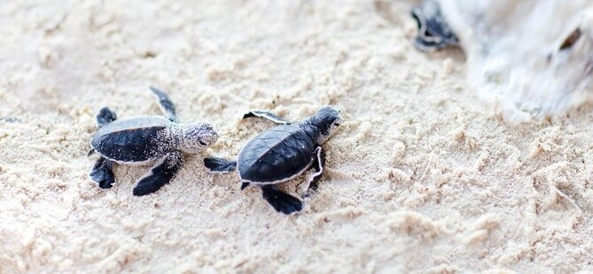
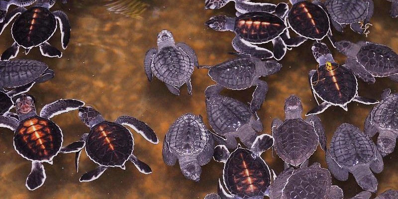

INTRODUCTION TO THE SRI LANKAN TURTLES HATCHERIES |
 |
The sea turtle is one of the most fascinating creatures that Sri Lanka is home to because it is one of the world's many endangered species. Sea turtle hatcheries on Sri Lanka's western coast frequently see a sizable number of them. The sea turtles travel to the hatcheries during their molting cycle by swimming through the vast Indian Ocean. The Galle Sea Turtle Hatchery of Sri Lanka was founded about 40 years ago to safeguard these regular visitors to the Galle Sea shore.
Brightly colorful turtles are shown in artistic artwork on the exterior walls of this Galle hatchery. Nearby visitor-friendly caution notice boards are located by each tank. Visitors to the hatchery may often watch live demonstrations that depict the whole life cycle of sea turtles, including their phase of conservation. The area acts as a nursery for all the baby sea turtles that first opened their eyes here. The hatchery features a number of little water tanks for the safety of these young sea turtles. |
BEST PLACES TO SEE THE TURTLE HATCHERY |
|  |
-
REKAWA BEACH
Rekawa is a far cry from Hikkaduwa in terms of popularity. Even still, this fishing community has its own allure, and its sandy shores are most recognized for serving as a turtles' breeding grounds.
-
PIGEON ISLAND
Pigeon Island, a marine national park, is known as one of Sri Lanka's most captivating snorkeling locations. It is home to numerous endangered and near-threatened species.
-
VISIT THE TURTLE HATCHERIES
Even though snorkeling with turtles underwater might sound more exciting, visiting a turtle hatchery is still a favorite activity for many visitors to Sri Lanka. You may be able to combine an informative tour with the releasing of hatchlings into the water if you arrange your visit appropriately.
|
MORE ABOUT THE HATCHERIES IN SRI LANKA |
|  |
- Visit the nearby sea turtle hatchery if you're ever in Sri Lanka; it's a once-in-a-lifetime chance to get up close and personal with these kind marine reptiles and discover how you can help protect these lovely creatures for present and future generations to enjoy.
- Five different species of sea turtles frequent the beaches of Sri Lanka, all of which are in danger of going extinct because of habitat degradation and mounting human pressures. Organizations like the Sea Turtle Hatcheries in Sri Lanka make an effort to address these problems and give these aquatic reptiles a chance at life.
- You may even be able to participate in the releasing of newborn turtles if you visit the hatchery at the ideal moment! Observe how these adorable tiny reptiles hastily make their way to the water, where they will spend the remainder of their lives.
|